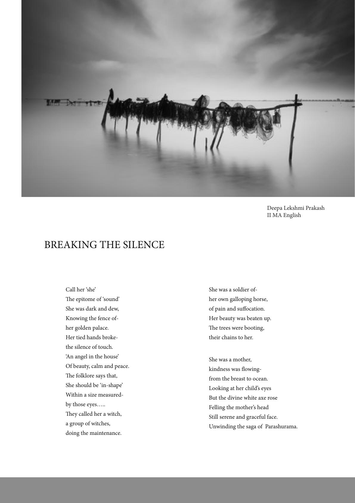

She was a soldier of-
her own galloping horse,
of pain and suocation.
Her beauty was beaten up.
e trees were booting,
their chains to her.
She was a mother,
kindness was owing-
from the breast to ocean.
Looking at her child’s eyes
But the divine white axe rose
Felling the mother’s head
Still serene and graceful face.
Unwinding the saga of Parashurama.
Call her ‘she’
e epitome of ‘sound’
She was dark and dew,
Knowing the fence of-
her golden palace.
Her tied hands broke-
the silence of touch.
‘An angel in the house’
Of beauty, calm and peace.
e folklore says that,
She should be ‘in-shape’
Within a size measured-
by those eyes…..
ey called her a witch,
a group of witches,
doing the maintenance.
BREAKING THE SILENCE
Deepa Lekshmi Prakash
II MA English